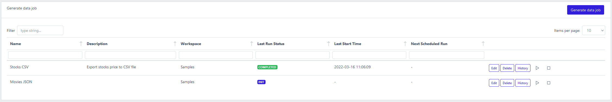
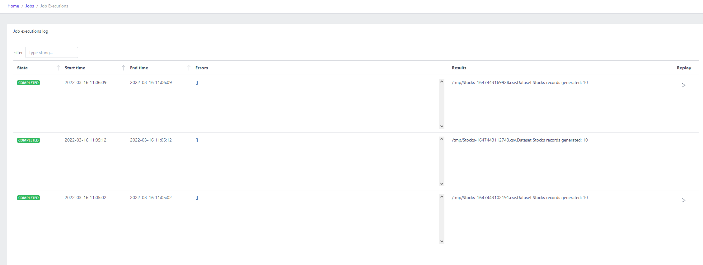
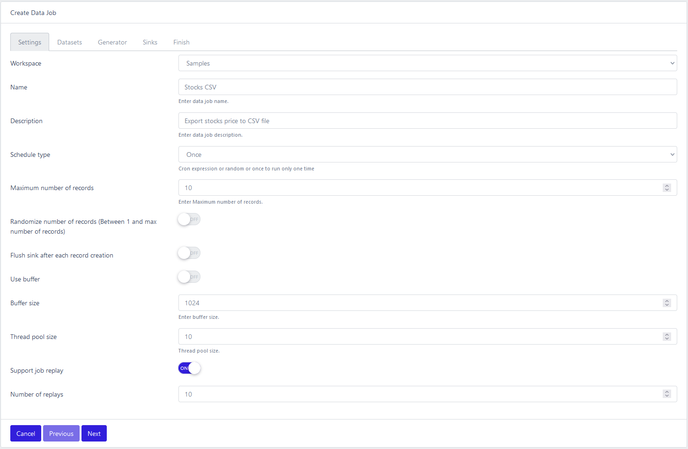
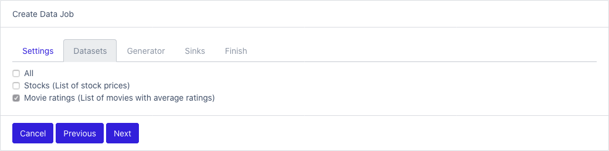
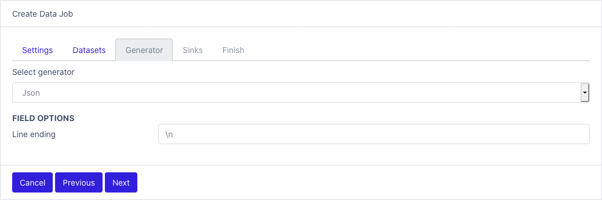
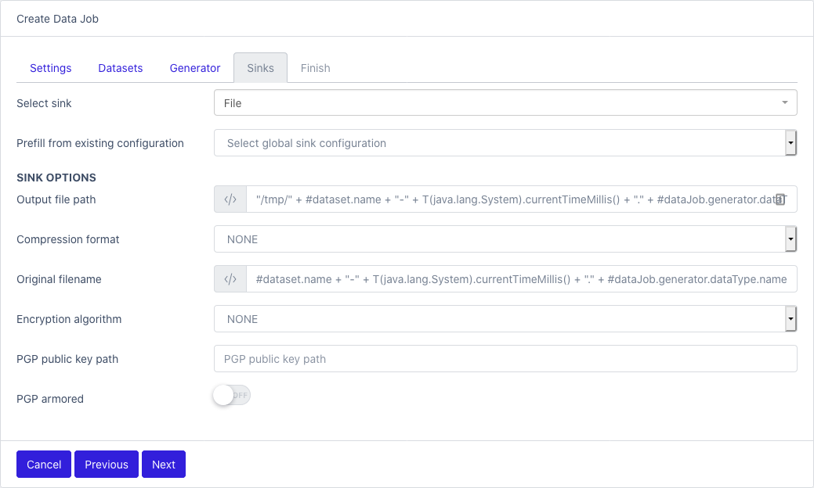
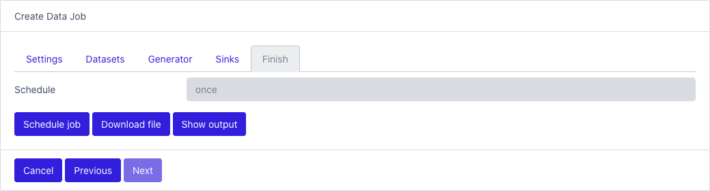

Generate data jobs
Table of contents
To view a list of all jobs: Jobs

- Name
- Description
- Workspace
- Last Run Status: possible values
- COMPLETED: finish successfully
- RUNNING: job is started
- CANCELLED: job was stopped during runtime
- INIT: job is not started yet
- FAILED: job run and halted with errors
To view a list of job executions
Click on the History button

- State: see DataJobs
- Start time
- End time
- Errors: contains error messages and exceptions if the job failed
- Results: contains helpful messages
- Replay: if the job is replayable, you can replay the job with the saved results as output.
Create data generation job
There are 4 sections to configure a data generation job. Complete each section, so you can schedule or run the job.
Settings

- Workspace: select one
- Name
- Description
- Schedule type:
- Once: run one time only
- Cron: quartz cron string (http://www.quartz-scheduler.org/documentation/quartz-2.3.0/tutorials/crontrigger.html). 6 digits format: 0 * * * * *
- Random: start the job in a random window. Configure the minimum and maximum delays.
- Maximum number of records: max records
- Randomize number of records
- Flush sink after each record creation: determine if the record is push to the sink after each creation
- Use buffer: control if records are stored in temporary memory before being pushed to the sink. Can optimize processing time if sink is slow. Act as a back pressure control.
- Buffer size: use in conjunction with Use buffer setting
- Thread pool size: controls how many thread are spawn to generate records
- Support job replay: flag that determine if job results will be persisted locally for future uses. That way you can replay the same records over and over in time.
- Number of replay: how many job replays are kept. Old ones are erased automatically.
Datasets

- Check which datasets will be part of the job
Generator

- Select one generator from the list
- Field options: each generator as its own specific configuration, see Generators
Sinks

- Select one sink from the list
- Prefill from existing configuration: if a Global sink was configured, you can use it here.
- Sink options: each sink as its own specific configuration, see Sinks
Last step

- Schedule job: save and run the job based on the schedule
- Download file: run the job immediately and download the results
- Show output: run the job immediately and show the results in the console